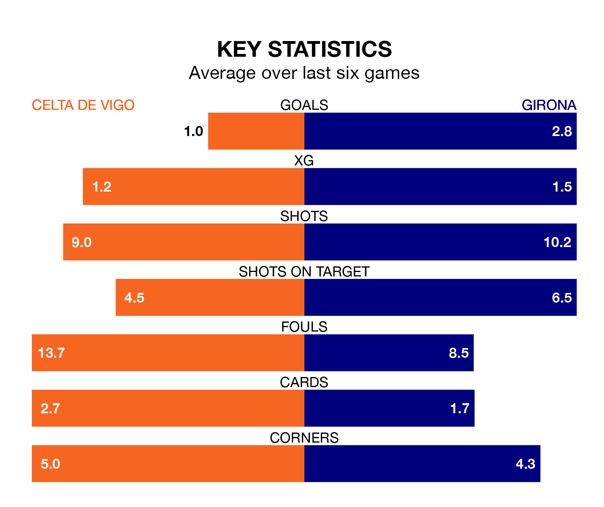

Girona face Celta de Vigo on Sunday seeking to protect their formidable unbeaten run in La Liga.
Girona are unbeaten in 13, with 10 wins and three draws, ahead of the 1pm kick-off.
They face a Celta team who have won two and drawn six over the same number of games.
With 51 goals in 21 games so far this season, Girona are the league's highest scorers with 2.4 goals per game. And they are conceding fewer than average, letting in 25 goals at a rate of 1.2 per game.
Celta, meanwhile, are below average scorers, with 1.0 goal per game, compared to a league average of 1.3. They have conceded 1.5 goals per game.
The away side are top of the table after 21 games, of which they have won 16 and drawn four, earning 52 points.
The hosts are 15 places behind Girona in 16th, with three wins and eight draws putting them on 17 points.
In Artem Dovbyk, Girona have the league's most on-form striker so far this season. He has notched 14 goals in 20 appearances.
His goal rate of one every 90 minutes is much quicker than that of Jørgen Strand Larsen, Celta's top scorer with a goal every 240 minutes, and a total of seven goals in 21 games.
In the last 10 years, Celta and Girona have played each other on seven occasions. Celta won two of them, Girona three, and they drew twice.
On average, Celta scored 1.3 goals and Girona 1.4 in those matches.
Their last meeting was on October 27, when Girona won 1-0 at home.
Celta's last match was on January 20, a 1-0 loss against Real Sociedad.
Girona beat Sevilla 5-1 last time out, on Sunday, with Dovbyk (three), Cristhian Stuani and Viktor Tsygankov on the scoresheet.
Updated: 09:07 (UTC), 24/01/24